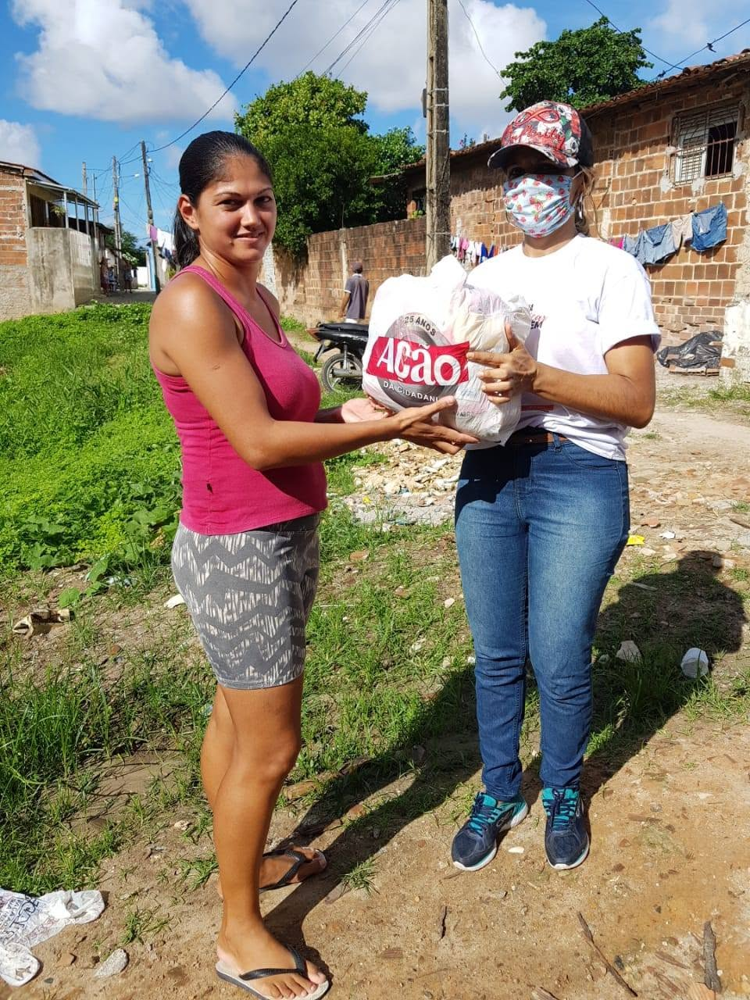
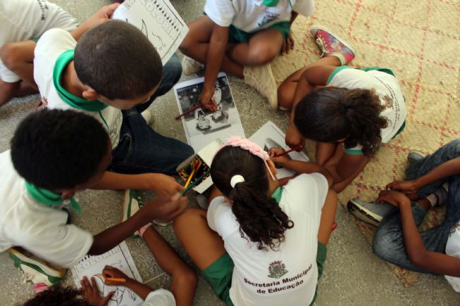
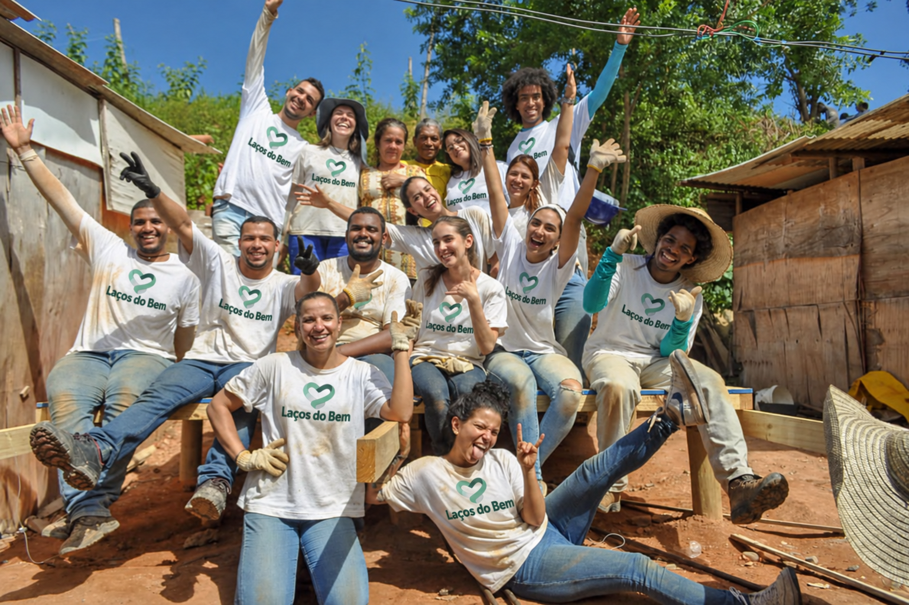

Mesa Solidária
Arrecadamos alimentos e organizamos cestas básicas para apoiar famílias em situação de vulnerabilidade.
Contribua com alimentos não perecíveis e ajude a levar solidariedade à mesa de quem precisa.

Conheça os projetos que levam alimento e acolhimento à nossa comunidade.
Arrecadamos alimentos e organizamos cestas básicas para apoiar famílias em situação de vulnerabilidade.
Contribua com alimentos não perecíveis e ajude a levar solidariedade à mesa de quem precisa.

Promovemos atividades de leitura e apoio escolar para crianças e adolescentes da comunidade.
Você pode ajudar doando livros e materiais escolares ou participando como voluntário nas atividades.

Dedique algumas horas para fazer a diferença na vida de outras pessoas.
Ajude a organizar doações, preparar atividades e realizar nossas ações comunitárias.
